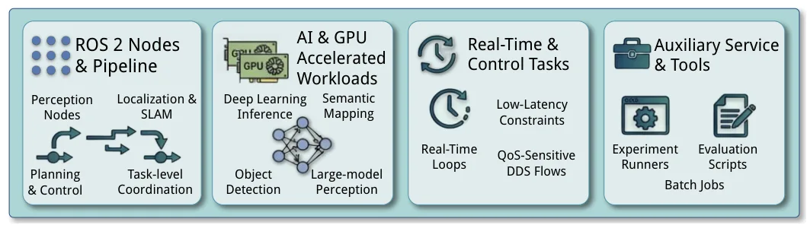
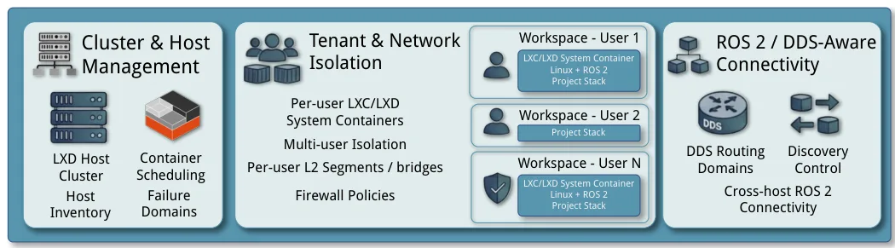
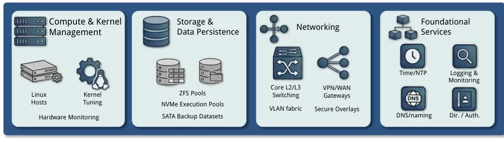
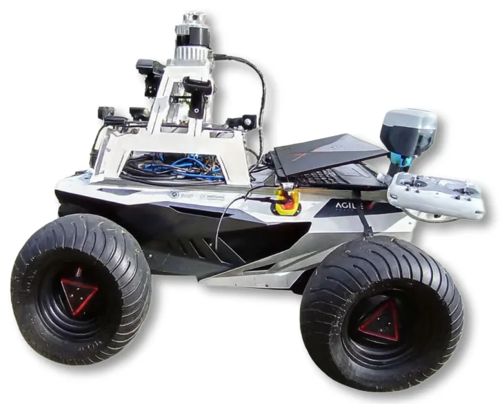

CSAR：面向机器人团队的容器化系统架构CSAR: Containerized System Architecture for Robotics
不是算法论文，但与 3D SLAM 工程部署、ROS 2/DDS、GPU 语义建图和实验可复现性相关，适合作为系统架构参考。
一句话工作总结
CSAR 偏系统工程，但为多人机器人团队部署 3D SLAM、语义建图和共享 GPU/边缘资源提供了可复现架构参考。
摘要
机器人应用越来越依赖嵌入式设备、边缘服务器和云资源组成的分布式计算基础设施，多用户团队在依赖隔离、兼容性、可复现性、共享专用硬件和跨异构环境部署方面面临复杂挑战。CSAR 是面向机器人团队和 edge-cloud continuum 的容器中心架构，结合 LXC/LXD system container、ROS 2/DDS 通信和三层 edge infrastructure，将计算组织为硬件亲和、持久且与实验负载解耦的执行环境。作者描述了学术机器人实验室的真实部署，并用 edge-offloaded 3D SLAM 与 GPU-accelerated semantic mapping 等用例评估。
Robotic applications increasingly rely on distributed computational infrastructures that combine embedded devices, edge servers, and cloud resources. This evolution, together with the collaborative nature of robotics projects, has made the development, integration, deployment, and long-term operation of robotic systems significantly more complex. In practice, multi-user robotics software teams face persistent challenges related to dependency isolation, compatibility, reproducibility, efficient sharing of specialized hardware, and deployment across heterogeneous environments. In this paper, we present CSAR (Containerized System Architecture for Robotics), a container-centric architectural framework designed specifically for robotics teams and the edge-cloud continuum. CSAR combines LXC/LXD-based system containerization, ROS 2/DDS-based communication, and a three-layer edge infrastructure to organize computation into hardware-affine, persistent execution environments that remain decoupled from the volatility of experimental workloads. Through its Infrastructure Core, Platform and Multi-User Orchestration, and Compute and Acceleration layers, CSAR provides strong isolation, controlled resource sharing, and topology-aware networking for distributed robotic applications. To demonstrate its validity, we describe a real deployment of CSAR in an academic robotics laboratory and evaluate it through representative use cases involving edge-offloaded 3D SLAM and GPU-accelerated semantic mapping. The results indicate that CSAR simplifies software integration, improves the utilization of shared computational resources, and facilitates safe prototyping, as well as reproducible and collaborative experimentation in robotics teams. The implementation described in this paper, including deployment templates, configuration files, and documentation, is available at https://github.com/goyoambrosio/CSAR.
中文解读摘录
- 为什么看：偏系统工程，但和机器人实验室中 3D SLAM、GPU 语义建图、边缘/云资源共享的可复现部署直接相关。
- 方法要点：CSAR 结合 LXC/LXD system containers、ROS 2/DDS 通信和三层 edge infrastructure，把硬件亲和的持久执行环境与易变实验工作负载解耦。
- 结果信号：论文描述了真实学术实验室部署，并用 edge-offloaded 3D SLAM 与 GPU-accelerated semantic mapping 作为代表用例；实现模板和文档开源。
- 跟踪建议：可作为多人团队共享 LiDAR/GPU/边缘服务器时的工程参考；重点看 ROS 2 网络拓扑、设备透传、GPU 隔离和实验复现模板。
- 链接：abs · PDF · 代码：https://github.com/goyoambrosio/CSAR
图表/页面预览

{kind=link}

{kind=link}

{kind=link}

{kind=link}
{kind=link}
